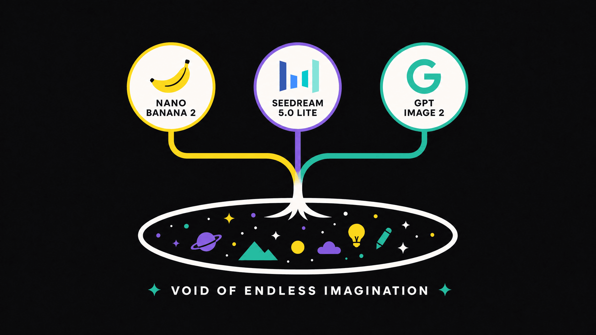

用 OpenArt 搭了一套角色内容流水线，一个人每周出 30 条
以前做角色 Vlog 和口播要手动抠图、录屏、剪分镜，现在把 OpenArt 嵌进工具链，角色库、视频生成、口型同步一条线串起来，省了大半手动环节。
我每周要出 30 条角色内容——15 条 Vlog 式的「AI 小人的一天」，15 条对着镜头讲话的口播片段。以前这条流程我拆成四步：找参考图手动抠角色、录屏生成分镜画面、单独录口播再做口型对齐、最后剪进发布模板。四步之间三次手动复制粘贴素材，口型对齐那步尤其磨人，录出来的声音和画面要么嘴型对不上，要么表情僵得像蜡像。
现在我把 OpenArt官网 插进了这条链的中间，角色库、视频生成、口型同步三件事在一个工作台里串起来了。上下游只需要接两个环节：上游用飞书多维表格存角色档案和选题池，下游直接把成片扔进剪映做字幕加封面，不需要再从不同工具导素材丢素材。

旧流程卡在哪
说具体点，之前最费时间的两件事：
角色一致性断链。 旧做法是每个视频单独找一张相似脸的参考图，生成的角色今天和明天长得不一样，观众留言问「这是换了个人吗」。我试过把同一个角色的多张图手动拼成 prompt，效果时好时坏，不稳定。
口播和视频分裂。 视频是一段，口播是另一段，后期得手动对齐口型。找过第三方口型工具，免费版只能处理 10 秒，长了就得切开，切完还要自己把节奏拼回来。
这两个点卡死之后，整条流程的产出速度就上不去——我试过把 Vlog 和口播合起来做「角色的一天」系列，但每次都因为角色变脸或口型不对返工，一条要重跑两三轮才能发。
新流程怎么接
现在这套链是这样的：
角色池 → 选题表 → OpenArt 生成 → 剪映出成片 → 飞书归档。 每个环节的衔接点我都说清楚。
第一步：飞书多维表格存角色档案
我有一张表，每行一个角色：头像、角色设定、常用场景、目标风格词。这张表是整个流水线的源头——选题表里每条视频都挂一个角色 ID，点进去就能跳到对应的 OpenArt 角色档案。不写角色名，写 ID，改头像或者加新角色只改表不改 prompt。
角色档案本身在 OpenArt 的角色库里维护。我从表上拿到头像路径，在 OpenArt 上传建角色，之后所有视频直接从角色库选，不再单独传图。角色一致性从「每次写 prompt 加描述」变成了「一次建档终身复用」。
第二步：选题表拆动作链
每条 Vlog 选题我在飞书表里写一条动作链——不是「悠闲的一天」这种氛围词，是「起床、刷牙、出门买咖啡、遇到朋友、回家做饭」这种动词串。拆得越细，进 OpenArt 之后分镜越可控。
到 OpenArt 这边，主题描述直接填这条动作链，宽高比固定竖版（短视频平台默认 9:16），背景音乐从风格库里挑一档，视频模型按当前档位选——选哪个档位适合短视频这条，我去OpenArt文档查过一次，不同档位的步数和分辨率对分镜稳定性的影响差不少。生成完先在分镜里扫一眼，哪个镜头出问题了单独重掷那个镜头，不用整条重来。
第三步：口播环节自然承接口型同步
一条 Vlog 出完之后，我从角色库里选同一个角色，写讲话内容加状态描述。状态描述要写环境和微动作——不只是说什么，还有「坐在书房里对着镜头讲话，偶尔微笑，手部小幅比划，语速中等，背景有书架和暖色台灯」这类细节。这些词直接影响表情幅度和语速，漏了之后角色容易直勾勾盯着镜头像在念稿。
生成出来的口播片段和前面的 Vlog 片段角色是同一个人——因为都是从同一份角色档案调的，一致性就锁住了。两个片段合起来剪进模板，加字幕封面就能发。
第四步：成片归档回飞书
剪映出成片之后，我把文件路径和发布时间回写到飞书选题表的对应行。这样每个角色、每个选题、每条成片在一张表里全链路可查，三个月前发过什么不会再重复做。
实操里最容易断链的两个地方
上面的流程看起来顺，但有两个环节我踩过坑，单独拎出来说。
免费层的边界要摸清楚再扩张。 一开始我从官方下载拿了包注册完就直接开无限档，后来发现免费层其实能把所有功能跑一遍——基础模型能到 1024×1024，够做短视频分镜了。试完基础模型的画风、写过几组动作链 prompt、把口型同步完整跑一条，再决定上订阅才划算。我见过有人上来就开最贵档，最后发现自己只用得到免费层那点功能，亏了好几个月。
角色档案质量直接决定出片率。 我试过一个角色档案只用一张图建，后面所有视频都从这张图扩散，结果出片里角色有时圆脸有时方脸，稳定性差到没法用。现在的做法是：角色建好之后，先在生图环节连续出三张图确认风格和比例稳定，再把这套档案标成「可复用」。这一步花 5 分钟，但后面所有视频直接选，省的是返工的时间。
这套流程什么时候划算，什么时候不划算
说点实在的：如果每周只出两三条内容，这套流程就有点重——飞书表的维护、角色档案的质量管控，都是沉没成本。但一旦周更量到 10 条以上，前面搭的架子就开始回本：一条角色档案能跑 20 条视频，一个动作链模板能换三四个角色复用。
反过来，角色 Vlog 和口播的组合只适合做「人设型」内容——比如同一个角色的健身日常、科技评测、游戏直播。如果做的是单条独立内容（比如一条产品开箱视频），角色一致性就不是刚需，用 OpenArt 的生图加视频功能单独跑反而更快。
另外，我试过把像素风素材也塞进这条角色流水线，结果发现不太行——像素风需要固定调色板和网格规格，和角色 Vlog 的分镜逻辑是两套东西。像素风那条线我单独跑，用同一个角色档案当参考，批量出变体，再进游戏引擎修规格。两条链分开管不混在一起。
总的来说，OpenArt 在这条流水线里的位置很明确：角色资产管理加视频生成中枢。上游接选题和角色定义，下游接剪辑和发布，中间的角色一致性、分镜生成、口型同步三件事它一个工具包就搞定了，少了两次跨工具复制素材和一次口型对齐的手动返工。
这整套角色内容流水线里用到的工具和配套资料，我在 GitHub、Gitee、GitCode 三个仓库都同步了一份——开源仓库方便社区检查脚本逻辑，国内镜像访问更快，遇到本地网络波动的时候还能从不同节点拉取。具体的角色档案模板、动作链示例、飞书表结构在资料里都有，照着拼就能搭出自己的版本。